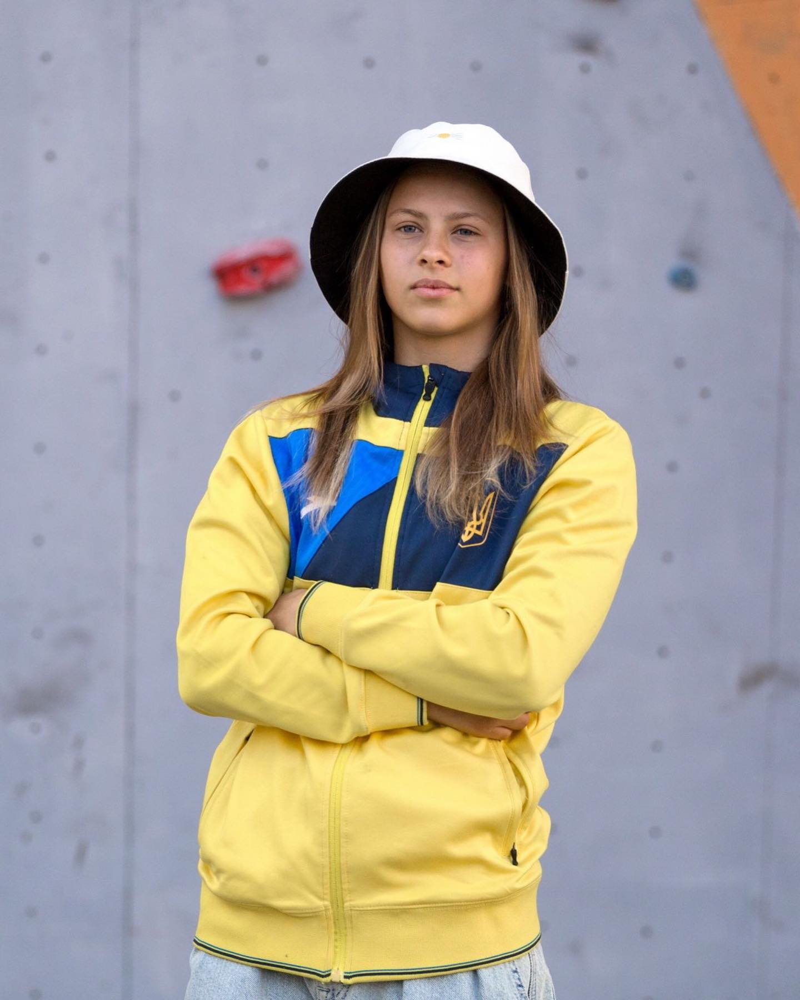
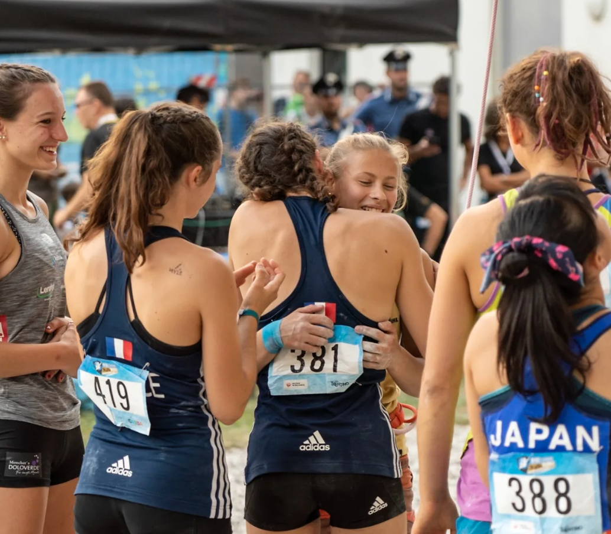
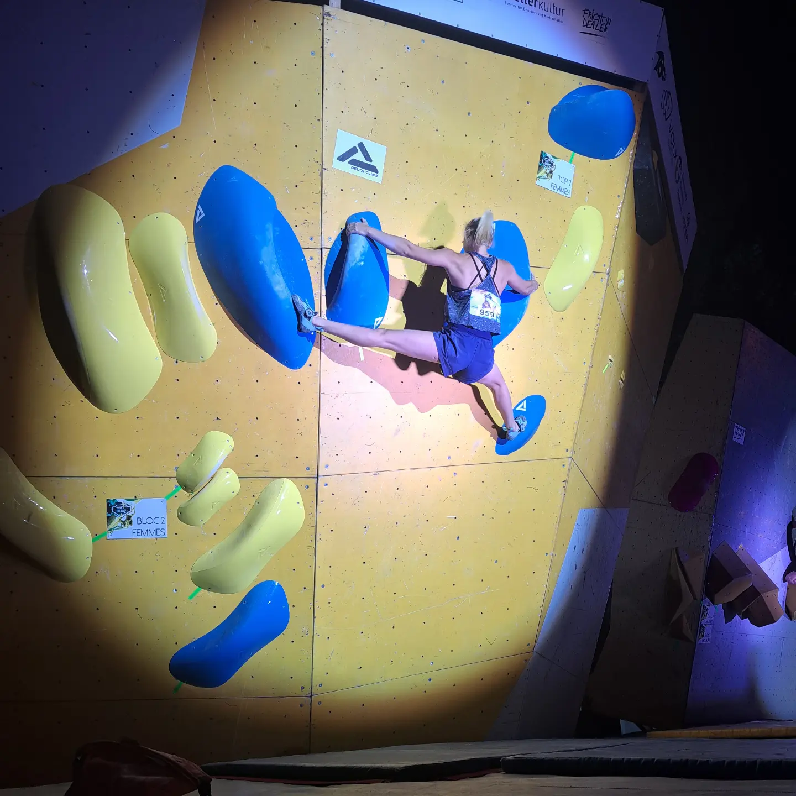
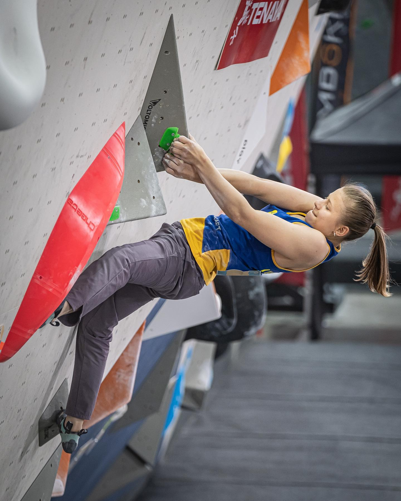
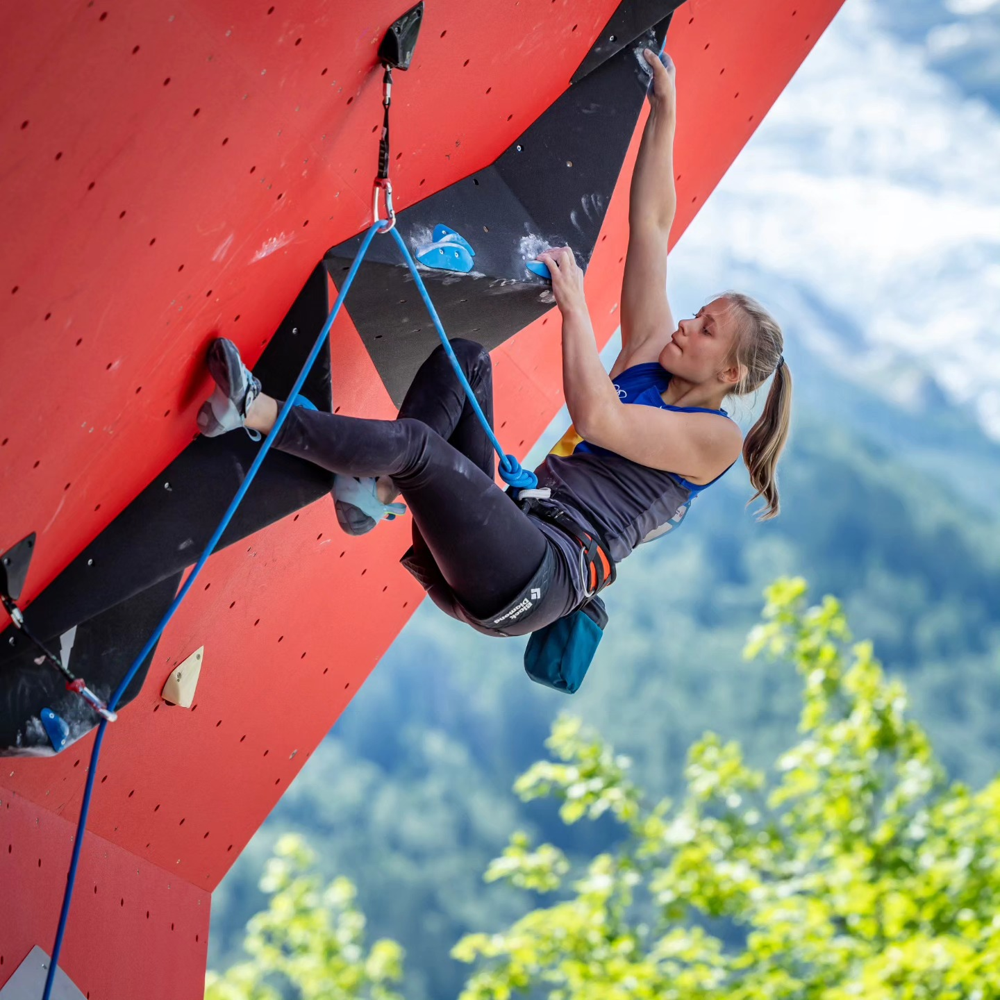

Youth World Champion. Senior European Champion. One of the most gifted lead climbers of her generation.
Nika entered her first competition season as a junior in 2017. By June she had won three consecutive European Youth Cup Lead rounds — Imst, Dornbirn, Uster. Not podiums. Wins. In her first year.

A year later, Nika was the best junior lead climber in Europe. European Youth Champion in Imst. Then Moscow — Youth World Championships. She finished second by the narrowest of margins. Silver. Age fifteen.
Everything at once. Youth World Champion in Arco on lead. Senior European Champion in Edinburgh — competing against the best women in the world as a sixteen year old. And between competitions, quietly, at Santa Linya: Fuck the System, 9a. The 23rd woman in history to climb the grade.
"I didn't realise what it meant at the time. I just wanted to climb the route."

One of the hardest sport climbing routes in the world. At sixteen. The 23rd woman in history to climb the grade — at the time, one of the youngest ever.

The coach who had built her career had been controlling everything — who she spoke to, who she trusted, how she saw herself. When that ended, it left a gap. Then the pandemic. Then, in 2022, the war. She left Ukraine carrying a refugee card and trained where she could — Germany, Innsbruck, anywhere.
"I was winning. But somebody was taking pieces from me."
She still competed. 7th at Senior Europeans Lead 2020. 4th at Youth World Championships 2022 — her best senior result of that period. But the momentum had broken.

World Cup Chamonix 2023 — 25th. Her best senior World Cup result. European Cup Žilina — 14th. 2025: 8th at Campitello di Fassa. The season opens in May. The trajectory is pointing up.
"I know I can climb much better than I am right now. I'll come back."

| 14 | European Cup Lead | 2025 |
| 46 | World Cup Lead | 2025 |
| 45 | World Cup Lead | 2025 |
| 15 | European Cup Lead | 2025 |
| 58 | World Cup Lead | 2025 |
| 8 | European Cup Lead | 2025 |
| 16 | European Championships — Combined | 2024 |
| 55 | World Cup Lead | 2024 |
| 55 | World Cup Lead | 2024 |
| 25 | World Cup Lead | 2023 |
| 14 | European Cup Lead | 2023 |
| 4 | Youth World Championships — Lead | 2022 |
| 11 | World Championships — Combined | 2021 |
| 3rd | European Youth Championships — Combined | 2021 |
| 7 | Senior European Championships — Lead | 2020 |
| 1st | Youth World Champion — Lead | 2019 |
| 1st | Senior European Champion — Lead | 2019 |
| 1st | European Youth Cup — Lead | 2019 |
| 1st | European Youth Cup — Boulder | 2019 |
| 1st | European Youth Champion — Lead | 2018 |
| 2nd | Vice Youth World Champion — Lead | 2018 |
| 1st | European Youth Cup — Lead | 2018 |
| 1st | European Youth Cup — Lead | 2018 |
| 1st | European Youth Cup — Lead | 2017 |
| 1st | European Youth Cup — Lead | 2017 |
| 1st | European Youth Cup — Lead | 2017 |